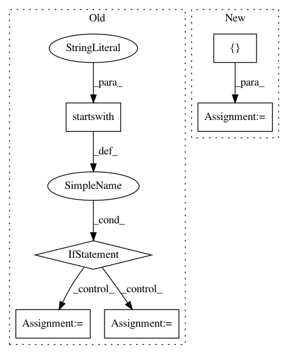

f25d9afd2572b98c56c3f597ad8da2648cd7b663,stanza/utils/training/common.py,,main,#Any#Any#Any#,21
Before Change
def main(run_treebank, model_dir, model_name):
paths = default_paths.get_default_paths()
args = sys.argv[1:]
if args[0].startswith("--"):
mode = Mode[args[0][2:].upper()]
args = args[1:]
else:
mode = Mode.TRAIN
treebank = args[0]
extra_args = args[1:]
if treebank.lower() in ("ud_all", "all_ud"):
After Change
command_args, extra_args = parser.parse_known_args()
mode = command_args.mode
treebanks = []
for treebank in command_args.treebanks:
if treebank.lower() in ("ud_all", "all_ud"):
ud_treebank = common.get_ud_treebanks(paths["UDBASE"])
In pattern: SUPERPATTERN
Frequency: 3
Non-data size: 6
Instances
Project Name: stanfordnlp/stanza
Commit Name: f25d9afd2572b98c56c3f597ad8da2648cd7b663
Time: 2020-12-01
Author: horatio@gmail.com
File Name: stanza/utils/training/common.py
Class Name:
Method Name: main
Project Name: OpenNMT/OpenNMT-py
Commit Name: aaa220b753c9749ac1a0d86a32e4c1fdcb4faa7a
Time: 2019-06-13
Author: francois.hernandez.fh@gmail.com
File Name: onmt/utils/optimizers.py
Class Name:
Method Name: build_torch_optimizer
Project Name: scikit-image/scikit-image
Commit Name: 2eb9e2686dabb686c8114760abec9d5546c24fc6
Time: 2017-12-20
Author: contact@kne42.me
File Name: doc/release/contribs.py
Class Name:
Method Name: